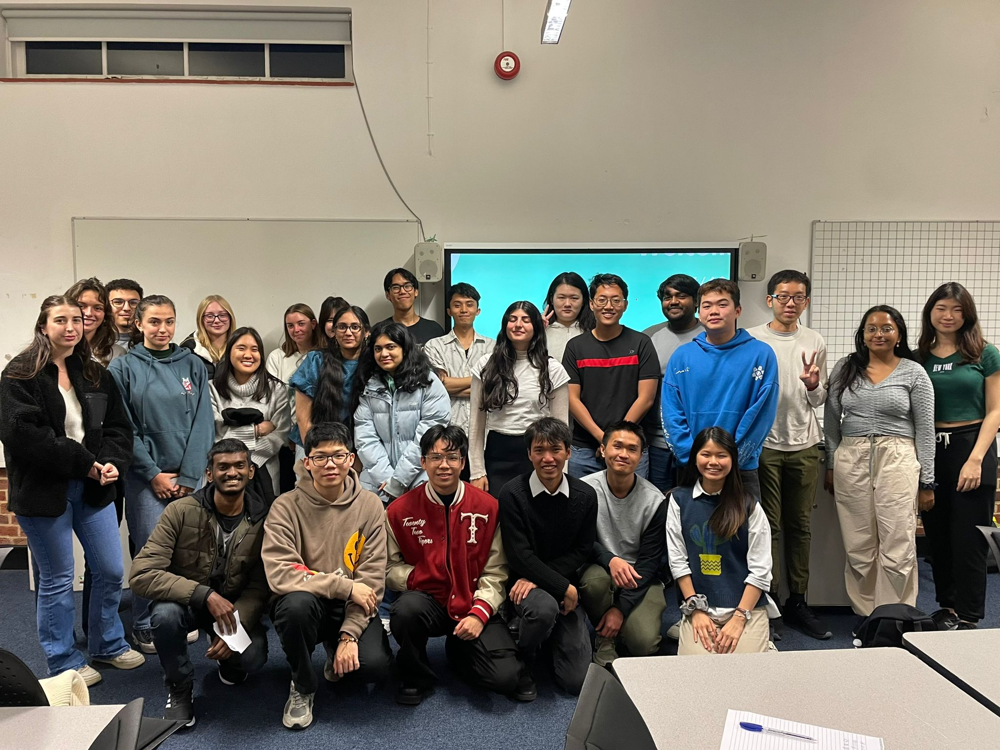
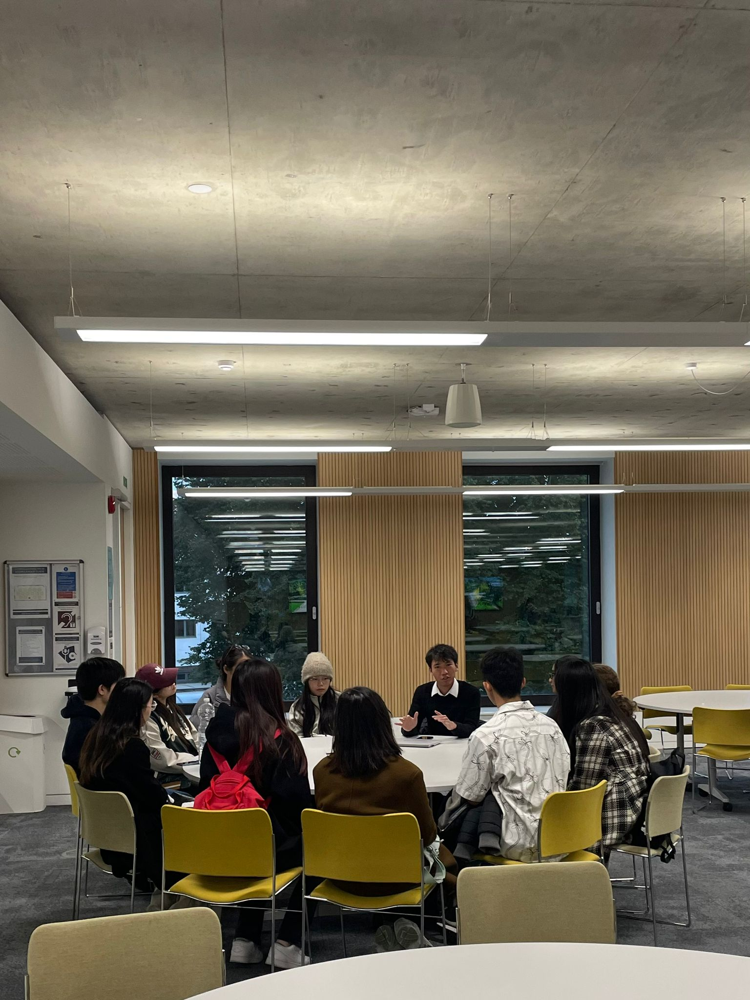
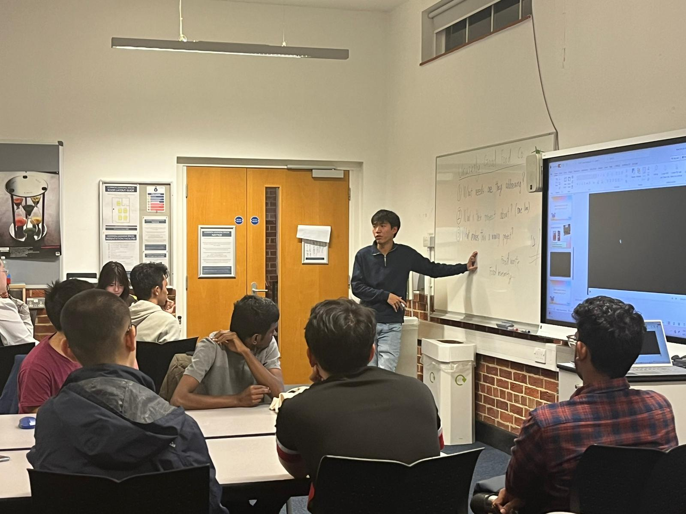
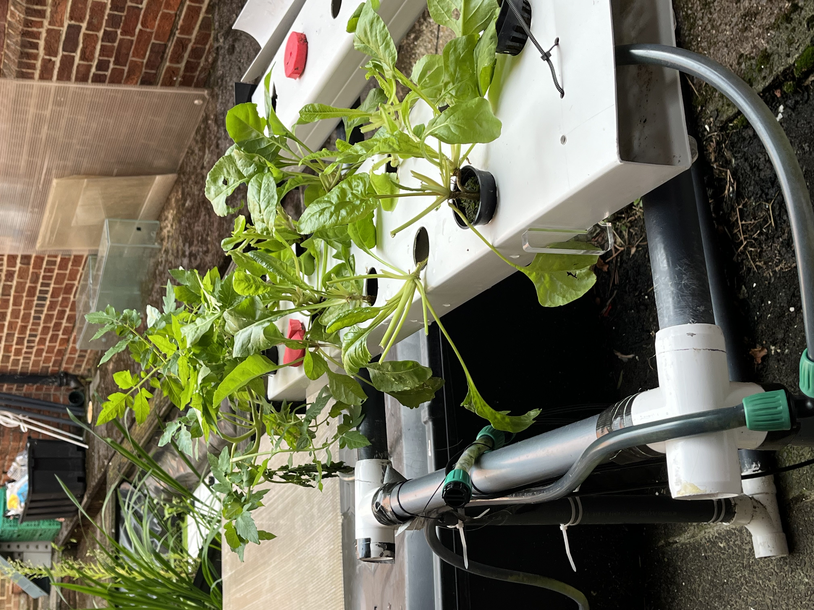
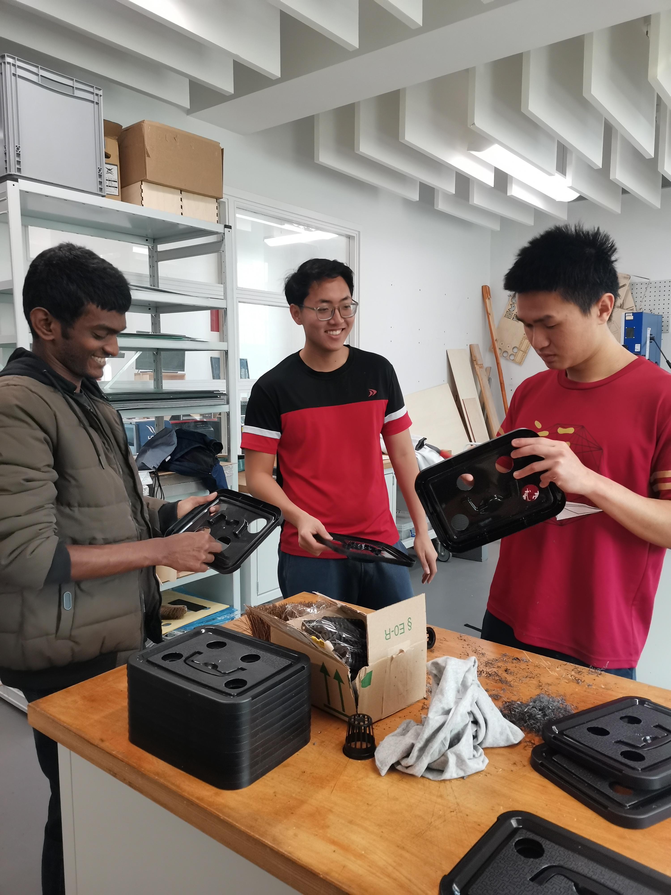
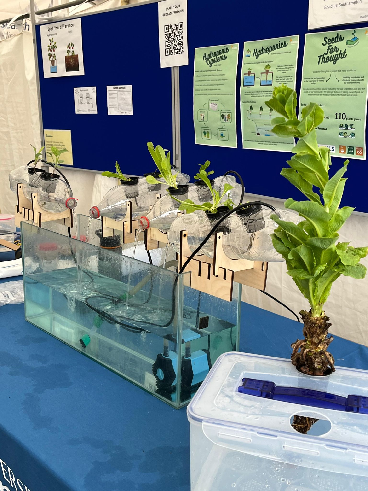
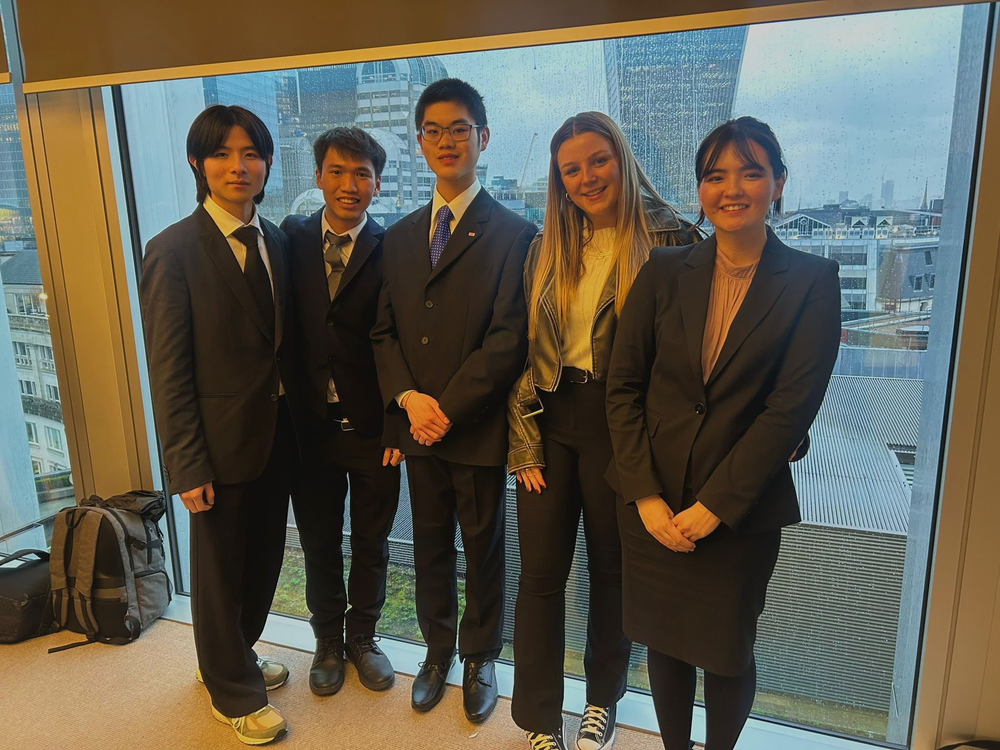
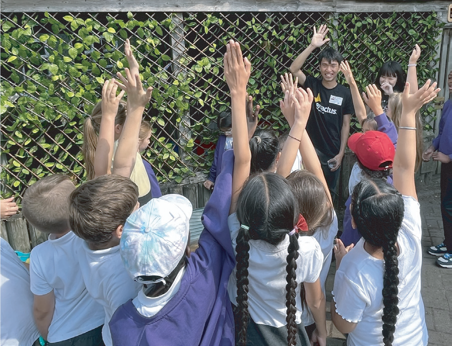
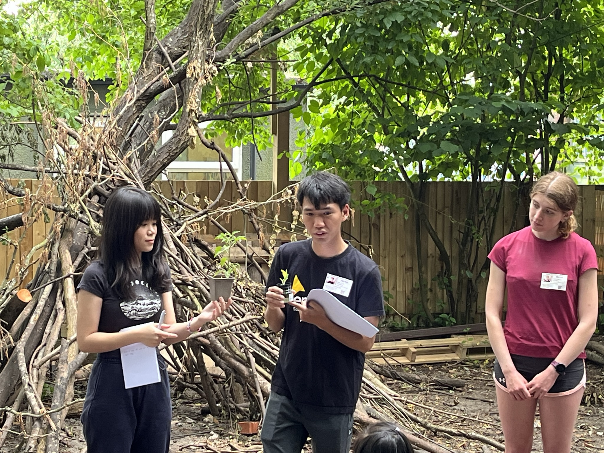
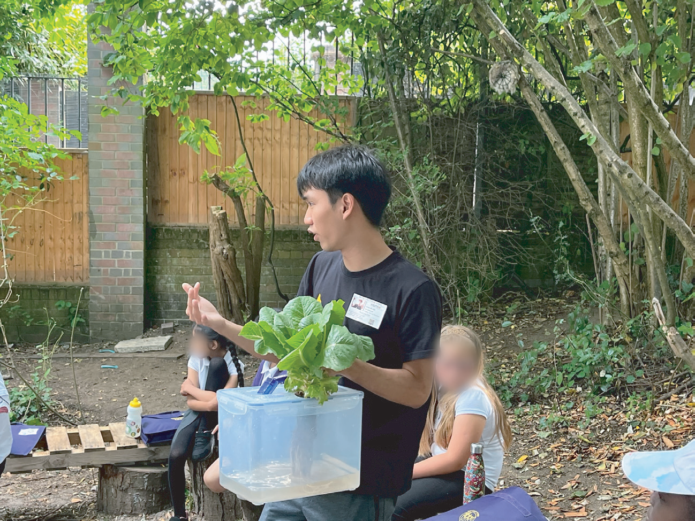

Volunteering
Using entrepreneurship and innovation to drive social and environmental impact.

Seeds for Thought — Enactus Southampton
Project Leader · University of Southampton · April 2023 – June 2024
Background
I joined Enactus Southampton in September 2022 as a project member for Seeds for Thought, helping establish the project's business model and conducting a study on hydroponics that shaped its strategic direction. I was part of the presentation team that pitched the project in the final round of the Action for Impact competition.
In May 2023, I took on the role of project leader, facing the challenge of being the only continuing member. I embraced the challenge as an opportunity for a fresh start, rethinking the project's structure and culture. By the end of summer, I had grown the team from 8 active members to over 35.



Project Rebranding
I led a strategic pivot away from crop production towards an education-centric approach, informed by conversations with primary school teachers and local farmers. Seeds for Thought now combats food insecurity by empowering primary school children with knowledge of simple hydroponic farming techniques and consistent access to fresh vegetables.
Mini Hydroponic Kit Product Development
I established a product business focused on selling our self-built mini hydroponic kit, with the aim of generating revenue to support our social initiatives. For each product sold, we allocate 50% of our profit to grow more veggies on-site, contributing 100% of our yield to children in need.
I oversee the entire business operation, which includes tasks ranging from product design and market analysis to developing minimum viable products using SPRINT planning. In terms of production, I implemented relevant OKRs to keep our timeline on track.



Key Achievements





Impact



Over 70% of children who attended workshops expressed great satisfaction with the sessions. The project delivered consistent access to sustainable, affordable fresh produce by equipping children with the knowledge and tools for vegetable cultivation.